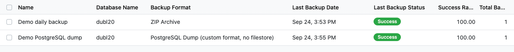
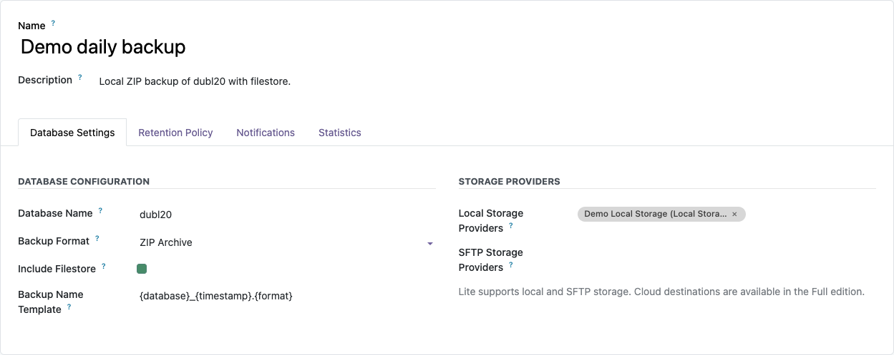
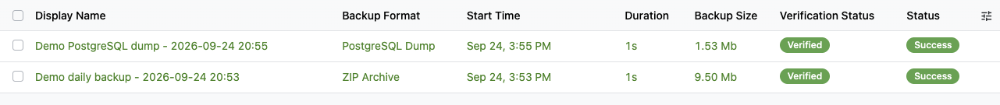
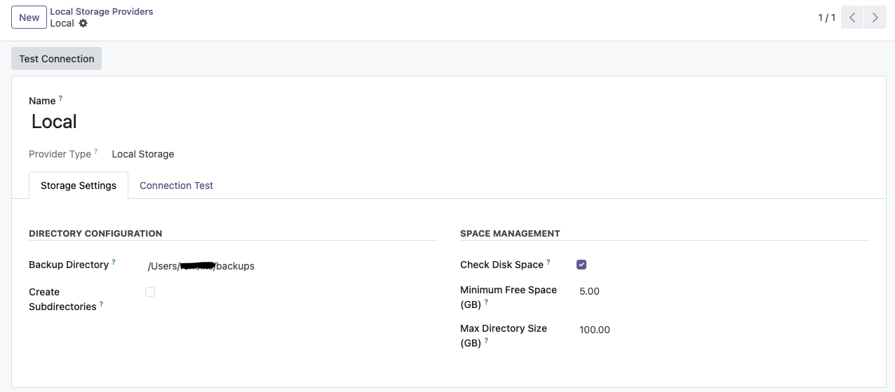
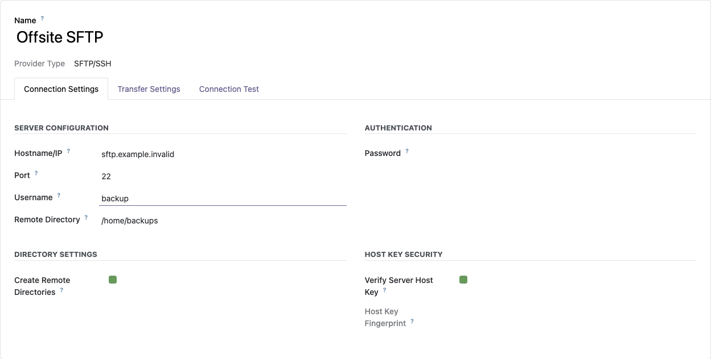
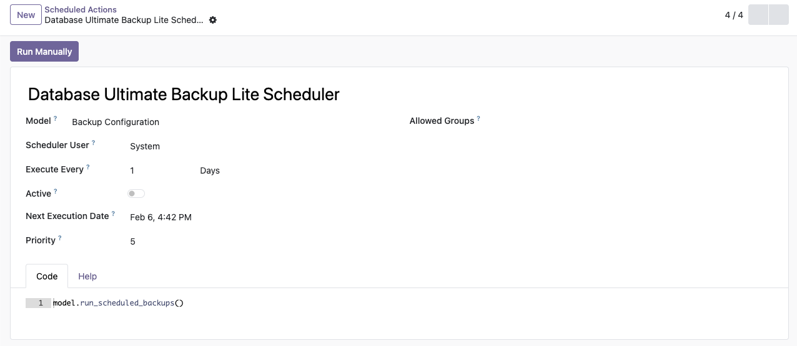
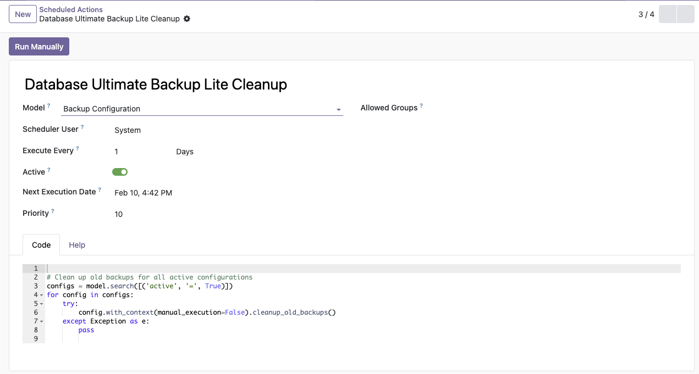

Free Local & SFTP Backup Solution
Back up your Odoo database locally or to any remote server via SFTP.
Store backups on local filesystem or network-mounted drives with disk space monitoring
Configurable cron scheduling with multiple backup configurations and formats
Automatic integrity verification of backup files after creation
Real-time job status tracking with success rate statistics and detailed logs
Flexible retention policies with automated cleanup and custom filename templates
Receive success and failure notifications via email with detailed backup information
Database Ultimate Backup Lite is a free, reliable backup solution designed for Odoo 18.0. It provides automated database backup capabilities with local and SFTP remote storage, retention policies, integrity verification, scheduling, and real-time monitoring.
Store backups locally or transfer them securely to any remote server via SFTP. Built with the Strategy design pattern for clean architecture and extensibility.
Configure local storage for daily backups, keep last 7 backups, and use email notifications to stay informed.
Automate daily snapshots of your development database. Quick local backups for safe testing and rollback.
Use SFTP to send backups to a remote server for true off-site disaster recovery. Combine with local storage for redundancy.
Meet data retention requirements with flexible retention policies. Verify backup integrity automatically.
Local Storage Provider
Store backups on local filesystem or network-mounted drives with disk space monitoring, directory organization, and integrity verification.
SFTP Remote Storage
Securely transfer backups to any remote SSH/SFTP server. High-performance transfers powered by AsyncSSH with upload verification.
Integrity Verification
Automatic verification of backup files to ensure integrity and detect corruption before it's too late.
Flexible Retention Policies
Automated cleanup of old backups with count-based or time-based retention policies. Test mode for safe policy validation.
Real-time Monitoring
Track backup job status in real-time with detailed execution logs, success rate statistics, and storage usage monitoring.
Email Notifications
Receive success and failure notifications via email with detailed backup information and error details.
See Database Ultimate Backup Lite in action







asyncssh for SFTP support: pip install asyncssh
Navigate to Database Ultimate Backup Lite > Storage Providers and create a provider:
/opt/odoo/backups)/home/backups/odoo)Use the Test Connection button to verify the provider is configured correctly.
Go to Database Ultimate Backup Lite > Backup Configurations > Create
Before relying on automated backups:
The module includes a cron job that runs daily by default. To customize:
asyncssh (for SFTP support)Upgrade to Database Ultimate Backup (Full Edition) for enterprise-grade multi-cloud support:
| AWS S3 | Azure Blob | Google Cloud | DigitalOcean | Parallel Uploads | Server-side Encryption |
Install Database Ultimate Backup Lite today - it's free! Enjoy automated, verified, and reliable local & SFTP database backups.
Don't forget to rate this module if you find it useful!